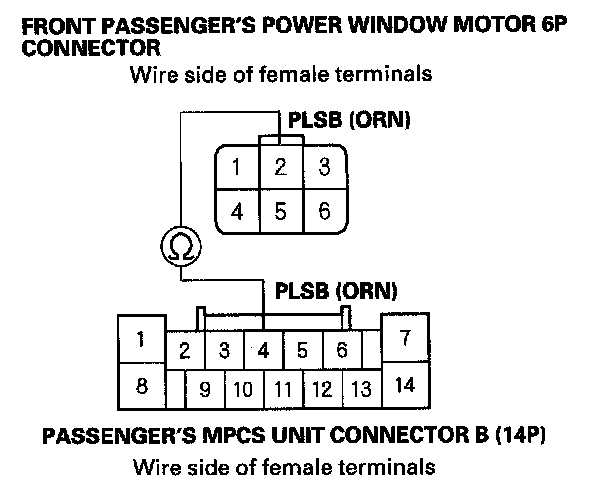
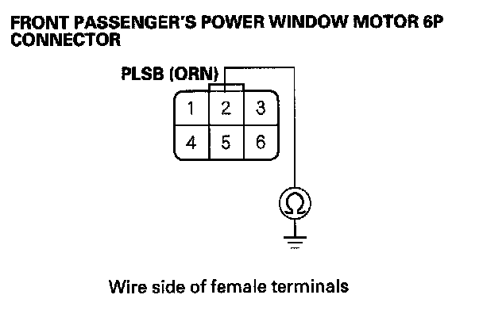
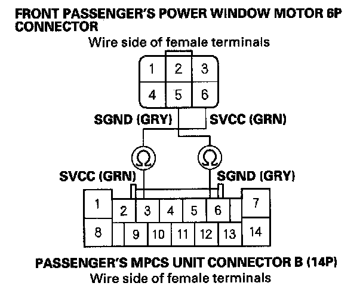
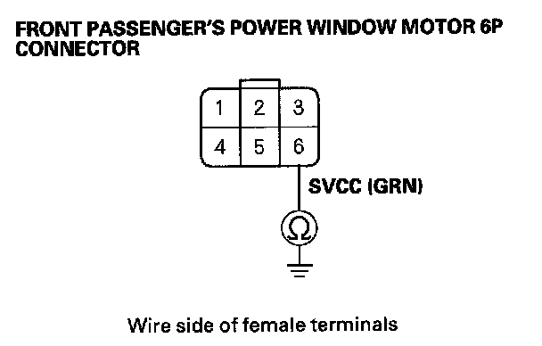

B2178
DTC B2178: Front Passenger's Power Window Motor Pulse B ErrorNOTE: If you are troubleshooting multiple DTCs, be sure to follow the instructions in B-CAN System Diagnosis Test Mode A.
1. Clear the DTCs with the HDS.
2. Turn the ignition switch OFF, and then back ON (II).
3. Open and close the front passenger's power window by using the front passenger's power window switch manually.
4. Check for DTCs with the HDS.
Is DTC B2178 indicated?
YES - Go to step 5.
NO - Intermittent failure, the system is OK at this time. Check for loose or poor connections.
5. Open and close the driver's power window by using the power window master switch manually.
Does the window motor operate?
YES - Go to step 6.
NO - Test the front passenger's power window motor.
6. Select the POWER WINDOWS from the BODY ELECTRICAL system select menu and enter the DATA LIST.
7. Check the DETECT/NONE information of the Front passenger's window motor B-phase pulse signal in the DATA LIST.
Does the information indicator display DETECT while the window is moving, and display NONE when the window is stopped?
YES - Replace the driver's MPCS unit.
NO - Go to step 8.
8. Check for DTCs with the HDS.
Is DTC B2177 also indicated?
YES - Go to step 15.
NO - Go to step 9.
9. Turn the ignition switch OFF.
10. Disconnect the passenger's MPCS unit connector B (14P).
11. Disconnect the 6P connector from the passenger's power window motor.

12. Check for continuity between front passenger's MPCS unit connector B (14P) No. 4 terminal and front passenger's power window motor 6P connector No. 2 terminal.
Is there continuity?
YES - Go to step 13.
NO - Repair open in the wire.

13. Check for continuity between front passenger's power window motor 6P connector No. 2 terminal and body ground.
Is there continuity?
YES - Repair short in the wire.
NO - Go to step 14.
14. Test the front passenger's power window motor.
Is the motor OK?
YES - Replace the passenger's MPCS unit.
NO - Replace the front passenger's power window motor.

15. Check for continuity between the passenger's MPCS unit connector B (14P) No. 3 and No. 6 terminals and the front passenger's power window motor 6P connector No. 5 and No. 6 terminals respectively.
Is there continuity?
YES - Go to step 16.
NO - Repair open in the wire.

16. Check for continuity between the front passenger's power window motor 6P connector No. 6 terminal and body ground.
Is there continuity?
YES - Repair a short to ground in the wire.
NO - Replace the front passenger's power window motor.